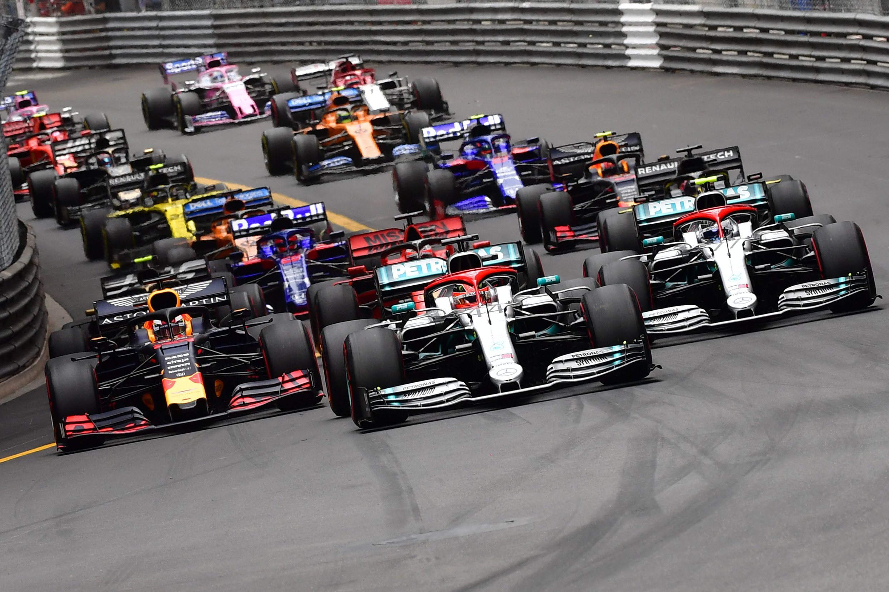

hello i am formula1 fan and it's pleasure thats you are here. i want you to know anything important about Formula1.
15 most important rules in Formula 1
To make F1 racing safe and fair, there are 15 important rules all teams must adhere to. These rules range from technical regulations such as car specifications to sporting regulations like flag signals and driver penalties.
Formula 1 (F1) is the highest class of international single-seater auto racing, sanctioned by the Fédération Internationale de l'Automobile (FIA). It's widely regarded as the pinnacle of motorsport due to its cutting-edge technology, global reach, and elite level of competition.

🔧 What Is Formula 1?
Founded: 1950 (First World Championship season)
Teams: 10 (as of recent seasons), each with 2 drivers
Races: ~24 races per season (called Grands Prix), held across the globe
Championships:
Drivers' Championship: Awarded to the driver with the most points
Constructors' Championship: Awarded to the team with the most combined driver points
🚗 F1 Cars
Extremely fast, with speeds over 220 mph (354 km/h)
Advanced aerodynamics, hybrid power units, and complex electronics
Each team designs its own car (within strict FIA regulations)
🚗 F1 Cars
1. Extremely fast, with speeds over 220 mph (354 km/h)
2. Advanced aerodynamics, hybrid power units, and complex electronics
3. Each team designs its own car (within strict FIA regulations)
👑 Top Teams (Historically & Currently)
Ferrari – Most historic team; passionate fanbase
Mercedes-AMG – Dominated 2014–2020 era
Red Bull Racing – Currently dominant (as of 2023–2024)
McLaren, Williams, and Lotus – Historic successes
you should wtach those grand prix
🧑🔧 Notable Drivers (Past & Present)
Michael Schumacher – 7-time world champion
Lewis Hamilton – Tied with Schumacher (7 titles)
Ayrton Senna – Legendary Brazilian driver
Max Verstappen – Current dominant force (as of 2024)
Fernando Alonso, Sebastian Vettel, Kimi Räikkönen – Recent icons
Would you like:
Info on the 2025 season?
The latest race results?
A guide for new fans?
A team/driver profile?
ChatGPT said:
Formula 1 uses a variety of flags to communicate important information to drivers during sessions. These flags are essential for safety, regulation enforcement, and race control. Here's a list of the main F1 flags and their meanings:
🟩 Green Flag
Meaning: Track is clear, racing resumes
When Used: After a caution period (e.g., yellow flag), or at the start of a session/sector
🟨 Yellow Flag
Single Yellow: Danger ahead — drivers must slow down and overtaking is not allowed
Double Yellow: Greater danger — be prepared to stop if necessary
When Used: For accidents, debris, or stranded cars on track
🟥 Red Flag
Meaning: Session or race is stopped
When Used: Severe accident, track is blocked or unsafe due to weather or damage
⚫️ Black Flag
Meaning: Driver is disqualified from the session or race
When Used: For serious rule violations or unsafe conduct
⚫️⚪️ Black and White Flag (diagonal)
Meaning: Unsportsmanlike behavior; final warning
When Used: Track limits abuse, aggressive driving, weaving, etc.
Often called the "warning flag"
⚪️ White Flag
Meaning: Slow vehicle on track ahead
When Used: Medical car, safety car, or a driver with mechanical issues
⬛️🟡 Black Flag with Orange Circle ("Meatball Flag")
Meaning: Car has mechanical problem — driver must pit
When Used: For things like loose bodywork, smoke, or fluid leaks
🟩🟨 Yellow and Red Striped Flag
Meaning: Slippery track surface (e.g., oil, water, debris)
When Used: Warns drivers of low grip or changing conditions in that sector
🟦 Blue Flag
Meaning: Faster car approaching — move over to let them pass
When Used: Shown to lapped drivers or those being caught by front-runners
🏁 Checkered Flag
Meaning: End of session or race
When Used: Waved as the lead car crosses the finish line